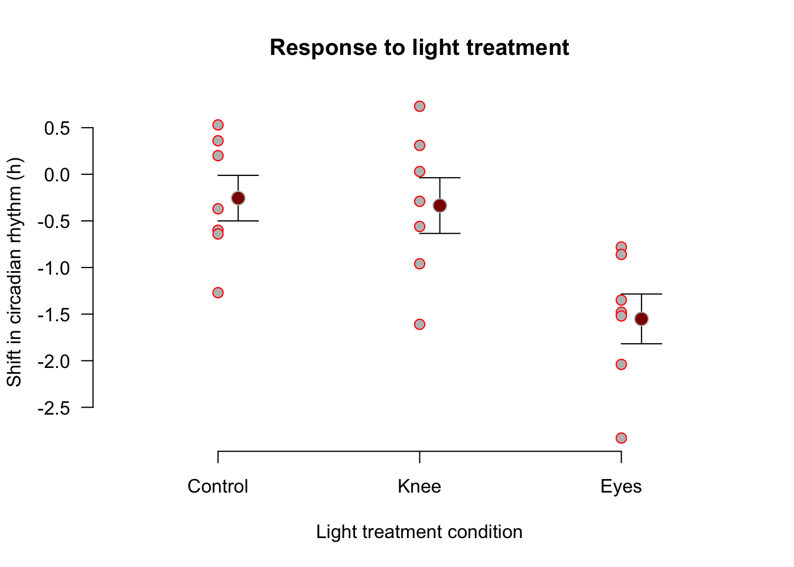
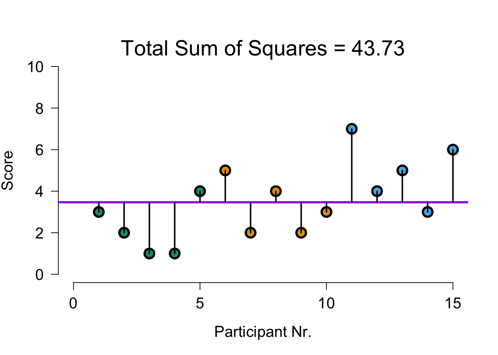
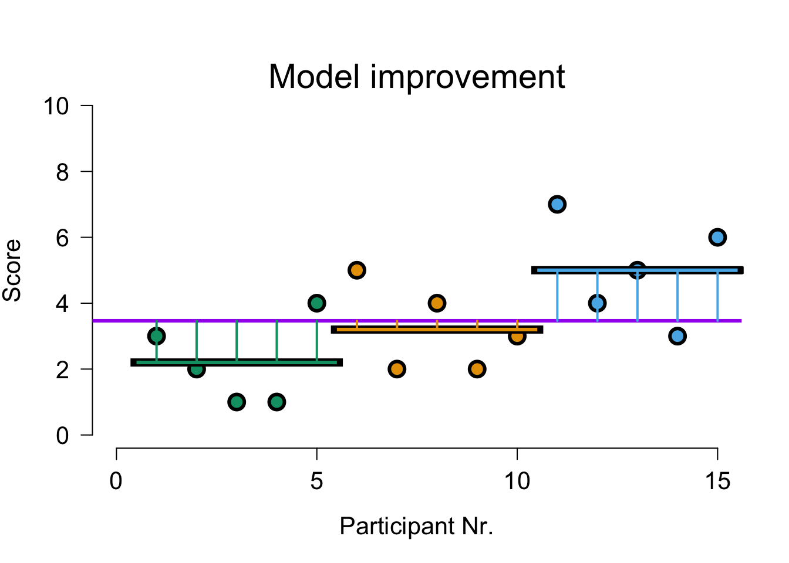
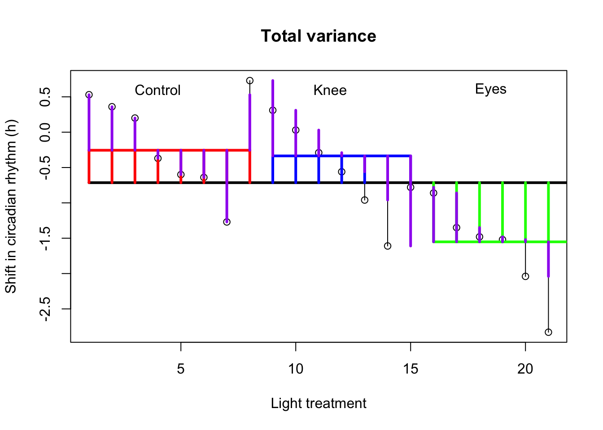
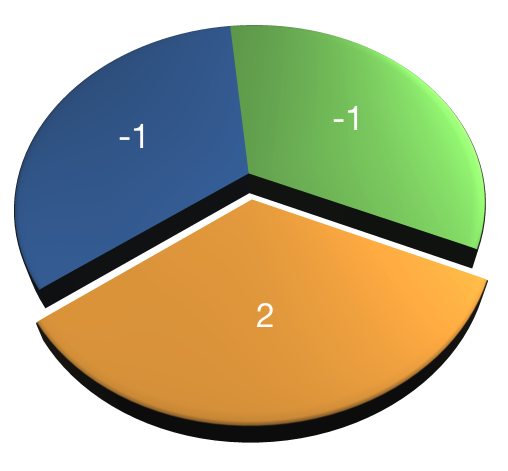
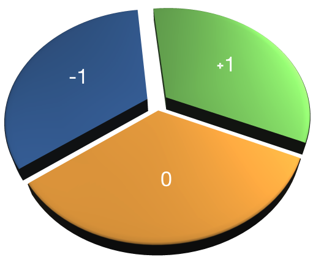
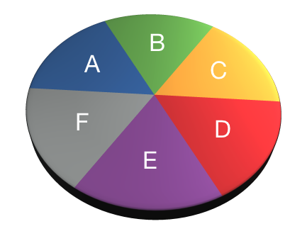
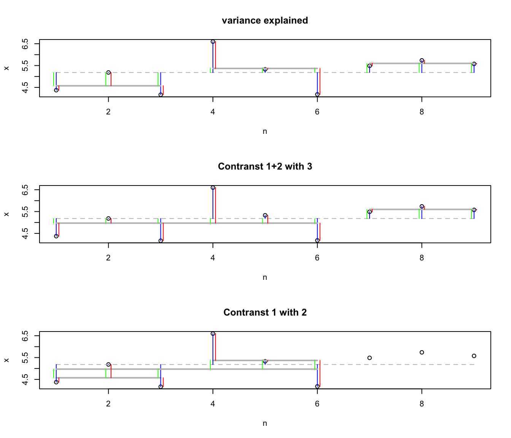

One-way independent ANOVA
Compare 2 or more independent groups.
Assumptions
Assuming th \(H_0\) hypothesis to be true, the following should hold:
- Continuous variable
- Random sample
- Normally distributed residuals
- Q-Q plots (or Shapiro-Wilk)
- Equal variance within groups (i.e., Homogeneity of variances)
- Ratio of variances/sd (or Levene’s test)
Jet lag
Wright and Czeisler (2002) performed an experiment where they measured the circadian rhythm by the daily cycle of melatonin production in 22 subjects randomly assigned to one of three light treatments.
- Control condition (no light)
- Knees (3 hour light to back of knees)
- Eyes (3 hour light in eyes)
The Data

Variance components
| Variance | Sum of Squares | DF | Mean Squares | F-ratio |
|---|---|---|---|---|
| Model | \({SS}_{model} = \sum n_k(\bar{X}_k - \bar{X})^2\) | \(k-1\) | \(\frac{{SS}_{model}}{{df}_{model}}\) | \(\frac{{MS}_{model}}{{MS}_{error}}\) |
| Error | \({SS}_{error} = \sum s_k^2 (n_k - 1)\) | \(N-k\) | \(\frac{{SS}_{error}}{{df}_{error}}\) | |
| Total | \({SS}_{total} = {SS}_{model} + {SS}_{error}\) | \(N-1\) | \(\frac{{SS}_{total}}{{df}_{total}}\) |
Where \(N\) is the total sample size, \(n_k\) is the sample size per category and \(k\) is the number of categories. Finally \(s_k^2\) is the variance per category.
Variance questions
- How much total variance is there in the dependent variable?
- Variance (total SS) = distance between observations and grand mean
- How much of this variance can we explain by looking at the group means?
- Model SS = distance between group means and grand mean
- How much of this variance is not explained by the group means?
- Error SS = distance between group means and observations
DV = Model + Error
Total variance
\[{MS}_{total} = s_x^2\]
ms.t <- var(x); ms.t[1] 0.8319357sum( (x - mean(x))^2 ) / (length(x) - 1)[1] 0.8319357\[{SS}_{total} = s_x^2 (N-1)\]
N <- length(x)
ss.t <- var(x) * (N-1); ss.t[1] 16.63871sum( (x - mean(x))^2 )[1] 16.63871Visual \({SS}_{total}\)

Model variance
\[{MS}_{model} = \frac{{SS}_{model}}{{df}_{model}} \\ {df}_{model} = k - 1\]
Where \(k\) is the number of independent groups and
\[{SS}_{model} = \sum_{k} n_k (\bar{X}_k - \bar{X})^2\]
[1] 7.380886[1] 3.690443Visual \({SS}_{model}\)

Error variance
\[{MS}_{error} = \frac{{SS}_{error}}{{df}_{error}} \\ {df}_{error} = N - k\]
where
\[{SS}_{error} = \sum_{k} s_k^2 (n_k - 1) = \sum_{k} \frac{\sum (x_{ik} - \bar{x}_k)^2}{(n_k - 1)} (n_k - 1)\]
[1] 9.257829\[{MS}_{error} = \frac{{SS}_{error}}{{df}_{error}} \\ {df}_{error} = N - k\]
df.e <- (N - k)
ms.e <- ss.e / df.e; ms.e[1] 0.5143238Visual \({SS}_{error}\)

Variance components
\[{SS}_{total} = {SS}_{model} + {SS}_{error}\] \[16.6387143 = 7.3808857 + 9.2578286\]
\[{MS}_{total} = \frac{{SS}_{total}}{{df}_{total}}= 0.8319357\] \[{MS}_{model} = \frac{{SS}_{model}}{{df}_{model}}= 3.6904429\] \[{MS}_{error} = \frac{{SS}_{error}}{{df}_{error}} = 0.5143238\]
F-ratio
\[F = \frac{{MS}_{model}}{{MS}_{error}} = \frac{{SIGNAL}}{{NOISE}}\]
fStat <- ms.m / ms.e; fStat[1] 7.17533Reject \(H_0\)?

Contrasts
Planned comparisons
- Exploring differences of theoretical interest
- Higher precision
- Higher power
Contrasts
- Values add up to 0
 

- AB-CDEF → A-B → CD-EF → C-D → E-F
- A-BCDEF → A-B → A-C
- A-BCDEG → BC-DEF → B-C → B-DEF
- ABC-DEF → BC-DEF → B-C
Assign values that sum to 0. Same values define chunk.
- AB-CDEF → A-B → CD-EF → C-D → E-F
| A | B | C | D | E | F | |
|---|---|---|---|---|---|---|
| Contrast 1 | ||||||
| Contrast 2 | ||||||
| Contrast 3 | ||||||
| Contrast 4 |

Post-hoc
Unplanned comparisons
- Exploring all possible differences
- Adjust T value for inflated type 1 error
- Why?
- Different procedures exist (e.g., Tukey, Bonferroni)
- Same procedure as contrasts, but: exploratory vs. confirmatory research
Effect size \(\eta^2\)
The amount of explained variance \(R^2\) as a general effect size measure.
\[R^2 = \frac{{SS}_{model}}{{SS}_{total}} = \eta^2\] Taking the square root gives us Cohen’s \(r\).
Effect size \(\omega^2\)
Less biased towards just the sample is omega squared \(\omega^2\).
\[\omega^2 = \frac{{SS}_{model} - ({df}_{model}){MS}_{error}}{{SS}_{total}+{MS}_{error}}\] But what does it say?
Effect size \(d\)
A more interpretable effect size measure is \(d_{Contrast}\). Which gives Cohen’s \(d\) for a specific contrast.
\[d_{Contrast} = \sqrt{\frac{2t}{\sqrt{n_1 + n_2}}}\]